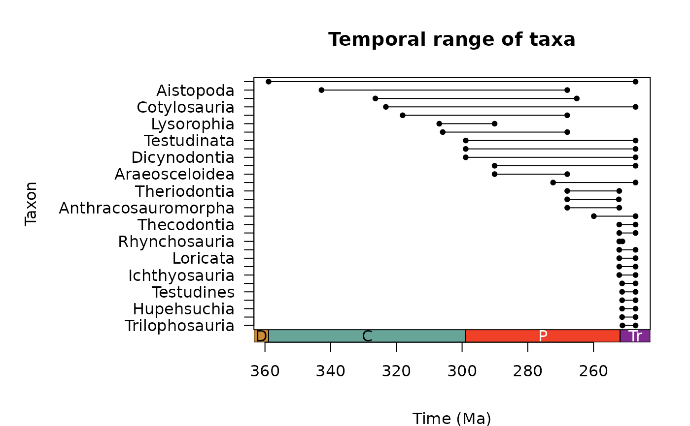
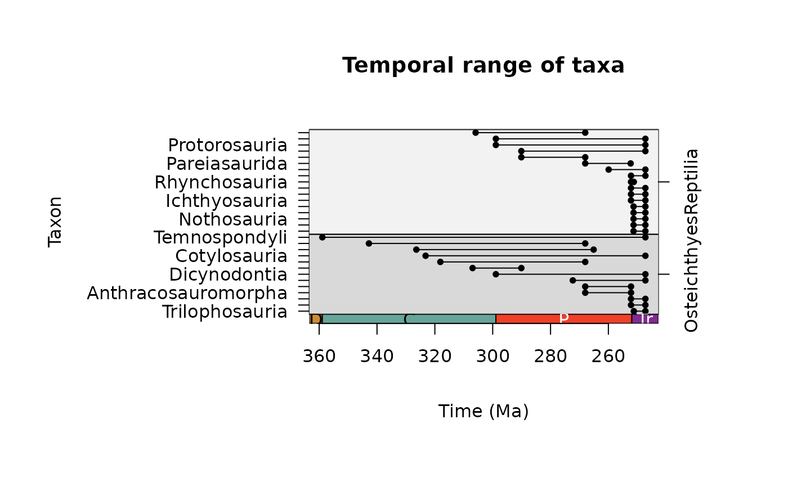
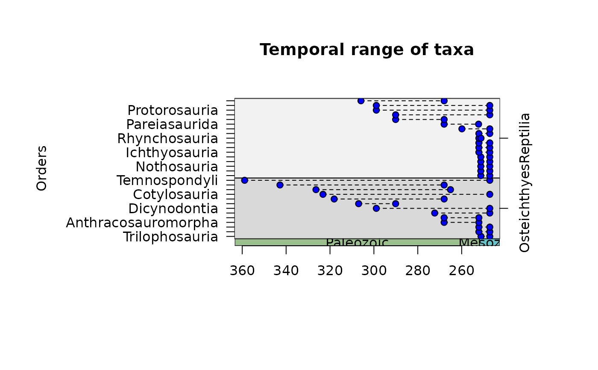
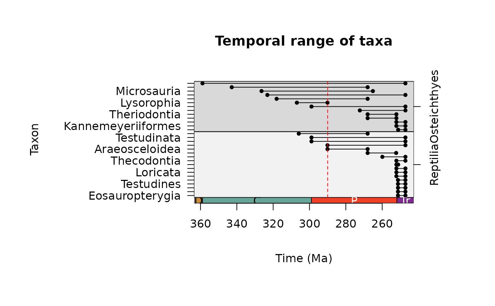

A function to calculate the temporal range of fossil taxa from occurrence data.
Usage
tax_range_time(
data,
name = "genus",
min_ma = "min_ma",
max_ma = "max_ma",
group = NULL,
sort = "FAD",
by = deprecated(),
plot = deprecated(),
plot_args = deprecated(),
intervals = deprecated()
)
# S3 method for class 'palaeoverse_tax_range_time'
plot(
x,
...,
axis = axis_geo(side = 1, intervals = "periods", title = xlab),
main = "Temporal range of taxa",
xlab = "Time (Ma)",
ylab = "Taxon",
col.group = c("grey85", "grey95")
)Arguments
- data
dataframe. A dataframe of fossil occurrences containing at least three columns: names of taxa, minimum age and maximum age (seename,min_ma, andmax_maarguments). These ages should constrain the age range of the fossil occurrence and are assumed to be in millions of years before present.- name
character. The name of the column you wish to be treated as the input names, e.g. "genus" (default).- min_ma
character. The name of the column you wish to be treated as the minimum limit of the age range, e.g. "min_ma" (default).- max_ma
character. The name of the column you wish to be treated as the maximum limit of the age range, e.g. "max_ma" (default).- group
character. The name of the column you wish to be treated as the grouping variable, e.g. "family". If not supplied, all taxa are treated as a single group.- sort
character. How should the output be sorted? Either: "FAD" (first-appearance date; default), "LAD" (last-appearance data), or "name" (alphabetically by taxon names).- by
- plot, plot_args
Use
plot()on the output of this function instead.- intervals
Use the argument
axisinplot()on the output of this function instead.- x
data.frame. An object of class"palaeoverse_tax_range_time"created bytax_range_time().- ...
Extra graphical parameters (see Details). The following arguments are already set internally and must not be specified here:
xlim,ylim,xaxt,yaxt.- axis
A function call drawing an axis, such as
axis_geo()(default) to add the geological timescale at the bottom of the plot, orgraphics::axis().- main
character. The plot title.- xlab
character. The x-axis title.- ylab
character. The y-axis title.- col.group
character. The background colours to use whenxhas groups. Must be of the same length as the number of unique groups.
Value
A data.frame containing the following columns:
unique taxa (taxon), taxon ID (taxon_id), first appearance of taxon
(max_ma), last appearance of taxon (min_ma), duration of temporal
range (range_myr), and number of occurrences per taxon (n_occ) is
returned.
This data.frame has an attribute palaeoverse_tax_range_time_group
that is for internal use only.
plot() invisibly returns a list with the graphical parameters mar
and usr used to draw the plot (see graphics::par()).
Details
The temporal range(s) of taxa are calculated by extracting all
unique taxa (name column) from the input data, and checking their
first and last appearance. The temporal duration of each taxon is also
calculated. If the input data columns contain NAs, these must be
removed prior to function call.
Note: this function provides output based solely on the user input data. The true duration of a taxon is likely confounded by uncertainty in dating occurrences, and incomplete sampling and preservation.
The following graphical parameters have default values that differ from base R:
bg = "black": the background (fill) colour of the points, only used forpchvalues 21 to 25.pch = 20: the symbol used for the first and last appearance points (seegraphics::points()).yaxs = "i": the style of y-axis interval calculation (seegraphics::par()).
The graphical parameters are reset when plot() exits. See 'Examples' to know how to add
components to the plot.
Examples
# Grab internal data
data <- tetrapods
# Remove NAs
data <- subset(data, !is.na(order) & order != "NO_ORDER_SPECIFIED")
# Temporal range
ex <- tax_range_time(data = data, name = "order")
plot(ex)

# Temporal range ordered by class
# Update margins for plotting
par(mar = c(8, 5, 6, 6))
ex <- tax_range_time(data = data, name = "order", group = "class")
plot(ex)

# Customise appearance
ex <- tax_range_time(data = data, name = "order", group = "class")
plot(ex, ylab = "Orders", pch = 21, col = "black", bg = "blue", lty = 2,
axis = axis_geo(intervals = "eras", abbr = FALSE))

# Control plotting order of groups
data$class <- factor(x = data$class,
levels = c("Reptilia", "Osteichthyes"))
ex <- tax_range_time(data = data, name = "order", group = "class")
plot(ex)
# Add elements to the plot
op <- par(plot(ex))
abline(v = 290, lty = 2, col = "red")

par(op)